DISTINCTIO VII — SURVEYING WITH THE QUADRANS¶
On Finding the Heights of Elevated Things, Depths, and Planar Lengths
Source Text: fibonacci:pg-7 (Boncompagni Vol. II, pp. 202–206 · fol. 131r–133v) · Latin (1220 / Boncompagni 1862) · Summary · GEOMETOR Notes

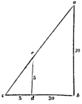
Surveying Heights & Distances with the Quadrans¶
Latin Locus: Distinctio VII — De Altitudinibus et Quadrante (pp. 202–206) · Commentary: Notes on Optical Similar Triangles
If you wish to measure any height: erect a rod upon the plane, and make it stand orthogonally upon that plane; and withdraw yourself from the rod and from the height to be measured; and you shall place your eye upon the ground looking past the top of the rod; and if your sight passes to the point of the summit of the height to be measured, mark a point upon the ground in the place where your eye will be. And if the line going forth from your eye past the top of the rod does not come to the point of the summit of that height, move yourself backward or forward until the line proceeding from your eye past the top of the rod ascends straight to the summit of the aforesaid height; and then the ratio of the plane that is between your eye and the elevated object to the elevated object itself that you wish to measure will be as the plane that is between your eye and the rod is to the rod itself. For example: let the height be ab, which stands erect upon the plane in which lies the line bc; wherefore angle abc will be right; and in that same plane, and orthogonally upon the straight line bc, let the rod de be erected; and let point c be your eye, from which passes line ac ascending through the top of the rod, which is point e; and triangle abc will be formed from height ab, line bc lying in the plane, and line ac which your eye makes; and triangle edc will be formed from rod ed, plane dc, and line ce:
f. 0210 · p. 203
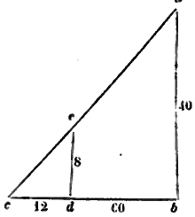

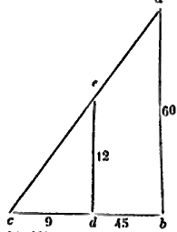

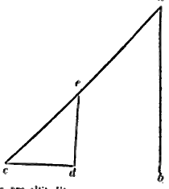

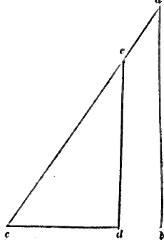
indeed triangles abc and edc are similar to one another, because they are equiangular; for each of the angles abc and edc is right, and the angle at c is common to both triangles; the remaining angle at a is equal to the remaining angle ced: therefore triangles abc and dec are equiangular, and hence similar. For similar triangles have sides proportional about equal angles; for as cd is to de, so cb is to ba. Hence if cd and de, namely the space between eye and rod and the rod de itself, are known, line cb will be known, and height ab will also be known: because if cd equals de, cb will equal ba; if greater, greater; if lesser, lesser: which things may be shown with numbers. Let rod ed be five palms, and space cd equal to it, and space cb be 30 ulnae; on this account height ab will likewise be 30 ulnae, since cd equals de, as appears in the first figure. Again, let cd be greater than rod ed; on this account plane cb will be greater than height ab, as appears in this second figure, in which we set space cd to 12 palms, rod ed to eight palms, and plane cb to 60 ulnae. Wherefore it will be as cd to de, that is as 12 to 8, or in lesser numbers as 3 to 2, so cb to ba: whence if we multiply 60 by 2 and divide by 3, there come 40 ulnae for height ab. Again, let cd be less than de. Wherefore space cb will be less than height ab, as appears in this third figure, in which we set cd to 9, namely the space between eye and rod, rod ed to 12, and plane cb to 45. Wherefore by how much ed adds above dc, by so much will height ab add above plane bc: for the ratio of ed to dc is sesquitertian (4 to 3). Wherefore height ab adds above plane cb its third part, which is 15; and thus height ab is 60: or if 45, namely cb, be multiplied by 12, that is by ed, and the sum divided by cd, namely by 9, there come 60 for height ab: or if 1/3 of cb be multiplied by 1/3 of ed and divided by 1/3 of cd, there come likewise 60 for ab: or if 1/3 of cb be multiplied by 1/3 of ed, there come 60 for height ab. From this indeed certain men wishing to measure trees in forests fit for ships adopted such a method: they have a reed equal to their stature, which they have from the tip of the heel up to the eye; and they place themselves upon the ground facing the tree they wish to measure, lying stretched out while holding the reed orthogonally upright beside the tip of both heels, so that as great as the height of the reed is, so great is the length of their stature from heel to eye; and they shift themselves sometimes approaching toward the tree, sometimes withdrawing from it; and they do this until their sight passes past the top of the reed to the top of the tree: and then as great as is the length between the eye and the foot of the tree, so great they say is the height of the tree. For example: let the height of the tree be ab, of the reed cd, and the stature of the man de; and let e be his eye, whose sight is line ae passing through point c; and then eb will be as ed to dc, as was shown above. But geometers, wishing to show some geometric subtlety, stand not very far from the tree, and with a bow they shoot two arrows at the tree, one to its root and the other to the point of its summit; and to each arrow they tie one thread, and stretch those threads leading them to one point on the plane, making out of those threads and the tree a right triangle, whose cathetus is the tree itself, and whose base is the thread of the arrow drawn to the foot of the tree, and whose hypotenuse is the thread of the other arrow, which subtends the right angle. For example: let the tree be line ab, and the thread of the lower
f. 0211 · p. 204
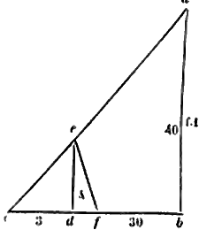

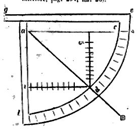
arrow be bc, and the thread of the other be ac. And when they have the measure of each thread, the square of thread bc shall be subtracted from the square of thread ac, and there remains for them the square of the tree ab: as if thread ac be 50 cubits, and thread bc be 30, let the square of 30, which is 900, be taken away from the square of 50, which is 2500; there will remain 1600 for the square of the tree ab, whose root, which is 40, is the height of the tree ab.
We can also have the measure of any height by a certain wooden triangle, provided that in that triangle a cathetus has been drawn from one of the angles, and the base upon which the cathetus falls be placed upon the plane. For example: let the height to be measured be ab, and let the wooden triangle be ecf, whose cathetus is ed; and let triangle ecf stand upon the plane of the height, so that line ed stands orthogonally upon that plane; and then let them place the eye upon the side ec of the triangle, which eye is h, and look through point e: and if your sight passing through e comes to a, it will be as cd to de, so cb to ba; and if your sight passing through e comes between ab, you will bring the triangle closer to height ab; and if that same sight ascends above height ab, you will draw the triangle back, and you will always make cathetus ed stand orthogonally upon the plane, propping up that triangle with small stones and with earth; and you will do this until your eye through e sees a: and when this is done, it will be, as I said, as cd to de, so cb to ba: so that if cd be 3 of any measure, and de be 4, and cb 30 paces, on this account height ab will be 40 paces; because ed adds above cd its third part: wherefore ab likewise adds a third above cb: or if cb be multiplied by ed, and the sum divided by cd, there come likewise 40 for height ab.
And because heights are measured finely, subtly, and easily with the quadrant, which indeed they call the horoscopus, I have taken care for the present to draw the quadrant itself and those things placed upon it that serve our purpose, so that I may more subtly demonstrate what I intend.
I set point a as center, and from it I draw two equal straight lines ab and ac containing a right angle, and with the interval of one of the straight lines ab or ac I describe the arc bdc, extending it slightly outward at point e; moreover I extend line ab as far as g, and place line eg parallel to line ac, and divide angle bac into two equal parts with line ad, and draw from point d perpendiculars dh, di upon straight lines ab and ac; and from this it will be shown that quadrilateral dhai is equilateral and rectangular; because three of its angles, which are at points a, h, i, are right; the remaining angle at hdi is right, since every quadrilateral has four angles equal to four right angles: and because angle bac is divided into two equal parts by line ad, each of angles dab and dac will be half a right angle, for angles ahd and aid are also right; wherefore each of angles adh and adi is half a right angle. Wherefore triangles hda and ida are isosceles, for they are also right-angled: wherefore line ad, subtending the right angles of triangles ahd and aid, is double [in square] of each of the sides ah, dh, id, ai; therefore those four sides are equal to one another: therefore quadrilateral ahdi is a square; and at point a I fasten a thread with a certain plumb bob, which hangs outside arc bdc; and I shall divide each side dh and di into 12 or 60 equal parts, and I shall mark all those parts as they are found marked on similar instruments: and thus the form of the quadrant is perfected; and line eg is not upon it, for e and g are pinholes: and if you wish to measure any height with this instrument, place your eye at pinhole e and stand facing the height
f. 0212 · p. 205
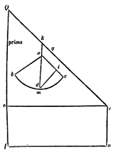

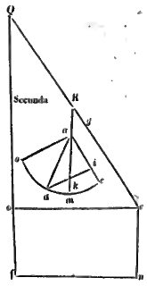
to be measured; and raise the quadrant from the side b, or incline it until your sight goes forth through pinhole e, passes through pinhole g, and arrives at the summit of the height to be measured; and then line eg, which we noted above, will fall upon that very line: and the point is observed where the aforesaid thread falls upon lines hd, di; because if the thread falls upon point d, then the height to be measured will be as great as the length between you and the foot of that height, and as much more as your own stature is. And if the thread falls between points d and i upon line di, say at point k, then the ratio of the plane between you and the height to the excess which that height has above your stature will be as ki to ia, that is as ki to di; and this is the ratio of a part or parts to its whole: and if the thread falls upon line dh, say at point l, then the ratio of the plane to the said remainder of the height to be measured will be as line ah to line hl, that is as line hd to hl; and this ratio is of the whole to some part or parts of itself. And that these things may be demonstrated geometrically, let the thread first fall upon point d, which is line am, and let m be the plumb bob; and because thread am hangs from point a, which is aloft, that thread will be parallel to the height to be measured, because the thread will stand orthogonally upon the plane upon which that height stands: and I understand that thread to pass upward until it meets the line which your sight made from e passing through g to the summit of the height to be measured; and again I understand a line to come from point e, namely from your eye, parallel to the plane between the height to be measured, which will mark on that height a point having in its height from the earth an equality to the height of your stature, and that line with the remainder of the height to be measured and with the line which your eye made passing through g to the summit of that same height makes a triangle similar to the triangle which the thread makes with two sides of the square described in the quadrant. For example: let the height to be measured be fq, whose summit is point q, to which your sight arrives through g from e; and let me understand line en to be equal to your stature, and likewise eo parallel to line nf, which is in the plane; wherefore of will be equal to your stature, which is en; wherefore triangle eoq will be similar to triangle dia, which is in the quadrant. To demonstrate which I understand thread ma ascending until it meets line eq at point k; and line eo will be parallel to line ai. Wherefore the angle dai is equal to angle dke: and because thread adm is parallel to height qf, and straight line eq falls upon them, angle dae will be equal to angle fqe. But angle dai was shown equal to angle dae; wherefore angle dai is equal to angle oqe. For angle eoq is also equal to angle aid: for each is right, because line eo is parallel to line nf, and angle qfn is right, wherefore angle eoq is also right; and angle aid is right in the quadrant: therefore the remaining angle oeq is equal to the remaining angle adi; wherefore triangle qoe is similar to triangle aid: therefore it is as di to ia, so eo to oq: for di is equal to ia; wherefore qo is also equal to oe, that is fn; and fn is the plane between you and the root of height fq: to which if height fo be added, that is en, namely your stature, height fq will be known; and this we wished to demonstrate. And if the thread falls upon line di at point k, it will also be shown that triangle qoe is similar to triangle aik: therefore angle kai will be equal to angle oqe, and the angles at o
f. 0213 · p. 206
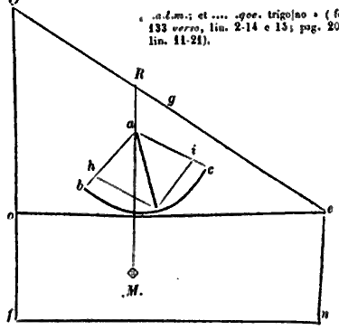

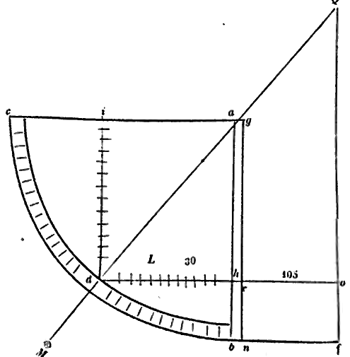
and i are right; wherefore the remaining angle aki is equal to the remaining angle oeq. Hence it will be as ki to ia, that is to di, so eo to oq. What part or parts therefore ki is of ia, the same part or parts eo is of oq. If therefore ik of ai, that is of di, be half, eo of oq is also half; if a third, a third; if two thirds, two thirds; and so on. And that these may be better understood in numbers: let plane nf, that is line eo, be 50 ulnae; and let ik be 37 marks out of the 60 equal marks which are in di, that is in ai. Wherefore it will be as 37 to 60, so eo, namely 50, to oq. Wherefore 50 must be multiplied by 60, and the sum divided by 37, and there come thence \(81\frac{3}{37}\) ulnae for height oq; to which if an equal to your stature be added, which is of, height fq will be known, as was said.
Again, let the thread fall upon side hd at point l, which is line alm; and let thread ma be produced to point r; and angle mre will be equal to angle oqe; and angle mai will also be equal to angle oqe: and because ahdi is a square, opposite sides ai and dh are parallel: and because straight line al falls upon the parallels ai and hd, angle lai will be equal to angle alh and to angle oqe. Likewise indeed alternately, as is shown in the first book of Euclid, angle alh will therefore also be equal to angle oqe. For angles qoe and ahl are also right; the remaining angle oeq remains equal to the remaining angle hal. Therefore triangle qoe is similar to triangle ahl, which is in the quadrant. Now similar triangles have sides proportional about equal angles. Wherefore it is as ah to hl, so eo to oq: as many times therefore as ah is a multiple of hl, so many times is eo, that is plane nf, a multiple of oq. That these things may be better seen, let hl be 39 parts out of the parts of hd, which are 60; and let nf be 105 cubits: proportionally therefore it will be as 60 to 39; which ratio in lowest numbers is as 20 to 13, so 105 to height oq. Wherefore 13 must be multiplied by the fifth of 105, namely by 21, and the sum divided by the fifth of 20, namely by 4; there will come \(68\frac{1}{4}\) cubits for height oQ.